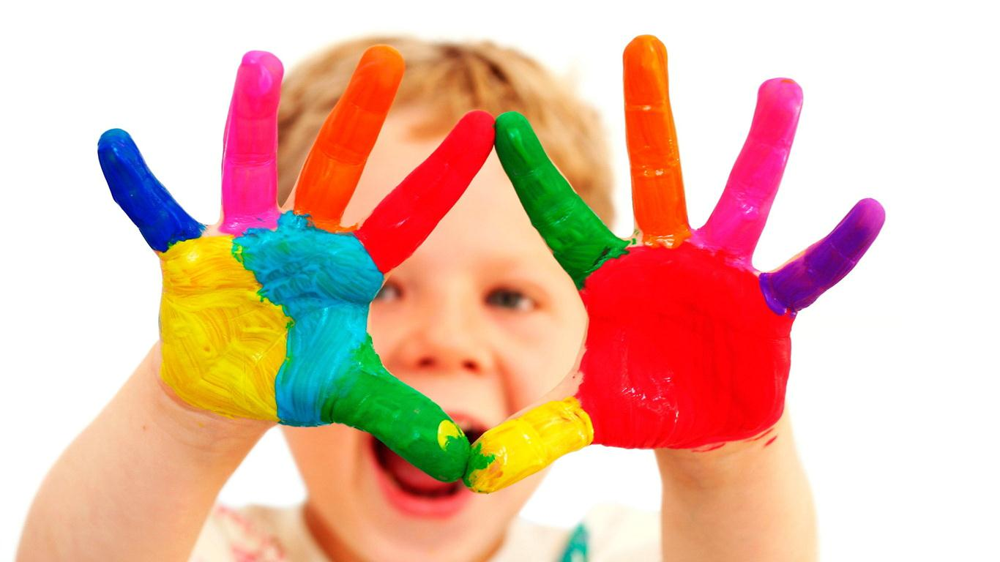

Adam' javascript学习笔记一 ----- 运动原理2012/11/8
Example - 1 - 小方块匀速运动 [ 停止条件 ： Math.abs(div1.offsetLeft - nTarget) < num ]
Example - 2 - 图片淡入淡出[ 透明度兼容IE,FF： opacity:0.3; filter:alpha(opacity:30) ]

Example - 3 - 小方块缓冲左右运动 [ 速度取整：iSpeed = iSpeed>0?Math.ceil(iSpeed):Math.floor(iSpeed) ]
Example - 4 - 右边浮动层 [ parseInt(iTarget) ]
→
→
→
→
缓冲运动